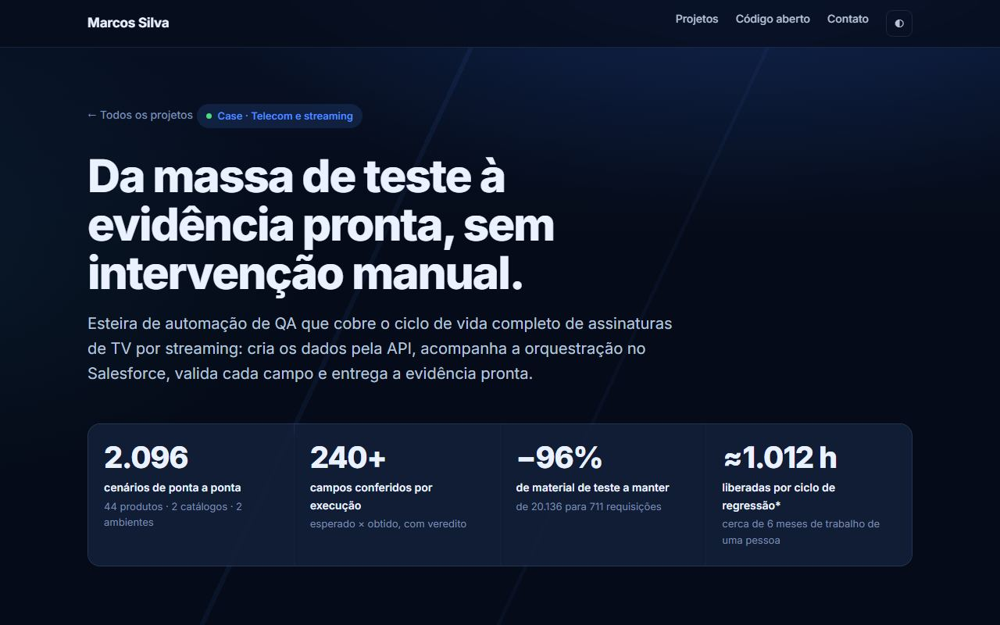
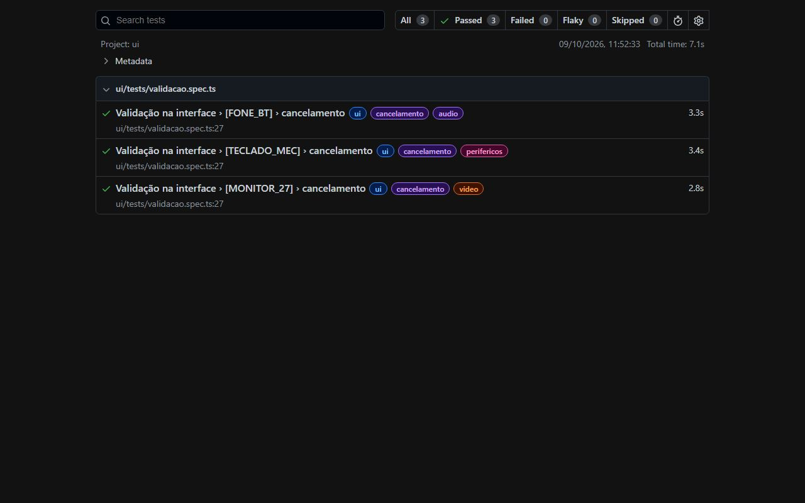
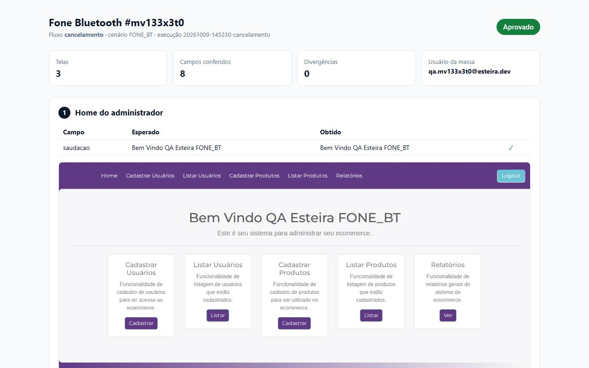

> Olá, eu sou o Marcos 👋
Automação de testes Web, Mobile e API, de ponta a ponta.
Senior QA Engineer, certificado ISTQB Advanced. Automatizo testes Web, Mobile e API integrados ao banco de dados: crio a massa pela API, valido cada campo na interface e no banco e entrego o resultado pronto, para o time testar mais e documentar menos.
Sobre mim
Quem eu sou
Sou especialista em automação de testes com foco em fluxos ponta a ponta de sistemas corporativos: APIs, Salesforce, bancos de dados e as telas por onde o dado passa.
Gosto de transformar processos de QA manuais, lentos e sujeitos a erro em esteiras confiáveis. Faço isso com testes orientados a dados, regras de negócio testáveis, evidência gerada sem operador e critérios objetivos no lugar do "acho que já processou".
No meu último projeto, uma esteira que construí passou a cobrir mais de 2 mil cenários de assinaturas de streaming e reduziu em 94% o esforço humano de um ciclo de regressão.
Experiência
Trajetória
-
out/2023 — atual · híbrido
Senior QA Engineer
Hitss Brasil · produto de assinaturas de TV por streaming em telecom
- Criei a esteira de automação de QA de ponta a ponta do produto (Playwright, TypeScript, Newman): cria a massa pela API, aplica as ações de ciclo de vida, acompanha a orquestração de cada pedido no Salesforce, valida a interface, o banco e o e-mail do cliente e gera a evidência sozinha.
- Resultados: 2.096 cenários cobertos, −94% de esforço humano por ciclo de regressão e −96% de material de teste a manter.
- Testes do ciclo de vida de assinaturas: aquisição, suspensão, retomada, cancelamento, chargeback, revogação e expiração, com cartão de crédito e Google Play.
- Automação de APIs no Postman com scripts JavaScript, fluxos encadeados, múltiplos ambientes e geração de massas; cenários BDD com Gherkin e Cucumber.js.
- Automação Web com Playwright, Cypress e Selenium e Mobile com Appium, em Java, JavaScript e Python, com captura padronizada de evidências em Salesforce.
- Suítes em pipelines GitLab CI/CD, versionamento com Git e validações em SQL.
- Cadernos de teste no OpenText Octane, gestão no Jira e investigação de divergências entre catálogos de produtos, com reporte de defeitos e evidências.
- Playwright
- Appium
- TypeScript
- Newman
- Salesforce
- Cucumber.js
- GitLab CI/CD
- SQL
-
mar/2021 — out/2023 · remoto
Senior QA Automation Engineer
Stigma System
- Elaboração de cenários e casos de teste a partir de regras de negócio e critérios de aceitação.
- Desenvolvimento e manutenção de testes automatizados de APIs, validando contratos, autenticação, respostas e regras de negócio.
- Execução de testes funcionais, de integração e de regressão.
- Preparação de massas de dados para testes positivos, negativos e de exceção.
- Registro, acompanhamento e validação de correções de defeitos em colaboração com a equipe de desenvolvimento.
- Análise dos resultados das automações e investigação de falhas.
- Apoio à aceitação do usuário (UAT), incluindo preparação de cenários e acompanhamento da homologação.
- Revisão da cobertura de testes e priorização de cenários críticos para o negócio.
- Automação de APIs
- Testes funcionais
- UAT
-
jan/2018 — dez/2020 · remoto
Analista de Integrações e Automação de APIs Pleno
MR Consultoria
- Desenvolvimento e manutenção de integrações REST em PHP e JavaScript para provedores de internet.
- Integração da URA com sistemas como IXCSoft, MK Solutions, Receitanet, Controllr e SGP.
- Levantamento de requisitos e mapeamento de dados entre os sistemas integrados.
- Implementação de consultas de faturas e extratos de conexão, com validação e tratamento das respostas das APIs.
- Tratamento de falhas de comunicação, autenticação e inconsistências nos dados.
- Execução de testes funcionais e de integração para validar os fluxos da URA.
- Análise de logs e diagnóstico de problemas nas integrações.
- Documentação de endpoints, parâmetros, respostas e procedimentos de configuração.
- Apoio à execução de rotinas de integração e testes no Jenkins.
- Participação em cerimônias Scrum e acompanhamento das entregas com a equipe.
- APIs REST
- PHP
- JavaScript
- Jenkins
- Scrum
-
nov/2014 — nov/2016 · Salvador, BA
Estagiário de Quality Assurance
NPR Brasil
- Apoio à elaboração e execução de casos de teste para um sistema financeiro web.
- Realização de testes funcionais e de regressão sob orientação da equipe de QA.
- Preparação e modelagem de massas de dados para diferentes cenários de teste.
- Verificação de cálculos, validações de campos e regras de negócio dos processos financeiros.
- Registro de defeitos com evidências e passos para reprodução.
- Reteste de correções e acompanhamento dos resultados.
- Atualização da documentação de testes e organização das evidências.
- Colaboração com analistas e desenvolvedores no esclarecimento de comportamentos esperados.
Formação
Tecnólogo em Análise e Desenvolvimento de Sistemas
Universidade Pitágoras Unopar Anhanguera · 2018–2020
Certificação e idiomas
ISTQB CTAL-TA · Certified Tester Advanced Level, Test Analyst
Inglês avançado (C1)
Meus projetos
Projetos em destaque
Um case real, anonimizado, e a mesma arquitetura em código aberto, com CI e relatórios publicados, para você ver como eu escrevo testes.

Esteira de automação de QA
Cria assinaturas pela API, acompanha a orquestração no Salesforce, valida mais de 240 campos e entrega a evidência pronta. Cerca de 1.012 h liberadas por ciclo de regressão.
- Playwright
- Newman
- Salesforce
- Oracle

qa-e2e-pipeline
A arquitetura do case contra uma loja pública: massa data-driven com Newman, espera com critério de pronto, validação com Playwright e Page Objects, e CI no GitHub Actions.
- TypeScript
- Playwright
- Newman
- GitHub Actions

Relatórios e evidências
O resultado da última execução do CI: relatório da massa sem credenciais, relatório do Playwright e uma evidência por cenário, com print de cada tela e esperado × obtido.
- Evidência
- htmlextra
- GitHub Pages
Minhas tecnologias
Stack e ferramentas
As ferramentas com que mais trabalho no dia a dia de automação.
Bancos de dados
Linguagens e entrega
Contato
Vamos conversar?
Se você tem uma oportunidade em QA Automation ou um projeto de automação de testes, fique à vontade para me chamar.